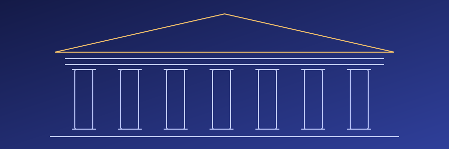
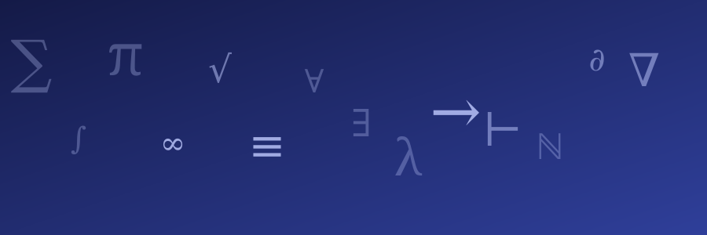

Museu Digital da Matemática
Um espaço dedicado à história, às ideias e às contribuições de grandes personalidades da matemática e da computação.
O Museu Digital da Matemática é um espaço criado para apresentar, de forma acessível, a trajetória e o legado de personalidades que contribuíram para o desenvolvimento da matemática, da ciência e da computação.
Aqui, você pode conhecer diferentes momentos da vida dessas pessoas, suas principais descobertas, seus trabalhos e a importância de suas contribuições para a sociedade.

Sobre o museu
A matemática está presente em diferentes áreas do conhecimento e teve participação fundamental no desenvolvimento da ciência e da tecnologia.
Ao longo da história, diversas pessoas dedicaram suas vidas ao estudo da matemática, da lógica e de outras áreas relacionadas. Suas ideias ajudaram a transformar a maneira como entendemos o mundo e também contribuíram para o surgimento de tecnologias que fazem parte do nosso cotidiano.
O Museu Digital da Matemática busca apresentar parte dessa história por meio de páginas dedicadas a personalidades que tiveram destaque nesse processo.

Nossa proposta
O objetivo do Museu Digital é tornar o conhecimento histórico e científico mais acessível, reunindo informações sobre pessoas, ideias e acontecimentos importantes para a evolução da matemática e da computação.
Conhecer a história da matemática também significa conhecer as pessoas e as ideias que ajudaram a construir o conhecimento que temos hoje.
Cada página do museu apresenta uma personalidade diferente, permitindo explorar sua trajetória, seus principais trabalhos e seu legado.
Personalidades em destaque
Atualmente, o museu apresenta duas personalidades que tiveram contribuições importantes para a história da matemática e da computação.

Ada Lovelace
Matemática britânica e pioneira da programação. Seus estudos relacionados à Máquina Analítica de Charles Babbage são considerados importantes para a história da computação.
Conheça Ada Lovelace
Alan Turing
Matemático, lógico, criptanalista e pioneiro da ciência da computação. Seus trabalhos ajudaram a estabelecer importantes fundamentos teóricos da computação moderna.
Conheça Alan TuringExplore o Museu
Conheça a trajetória, os trabalhos e o legado de personalidades que ajudaram a transformar a matemática, a lógica e a computação.
Comece sua visita escolhendo uma das personalidades disponíveis no museu.
Comece sua visita
Explore as páginas de Ada Lovelace e Alan Turing e conheça suas contribuições para a história da matemática e da computação.
Conhecer Ada Lovelace Conhecer Alan Turing